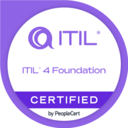

Senior IT technician at Kuwait's Ministry of Interior and ITIL v4 certified. I design and build full-stack .NET applications on ASP.NET Core and SQL Server, and administer Windows Server infrastructure — from Active Directory to firewalls — end to end.
As a Senior IT Computer Maintenance Technician at the Ministry of Interior (MOI) in Kuwait since April 2022, I support the Technical Support Department — troubleshooting end-user devices, resolving hardware and software issues, and supporting Active Directory domain-joined computers. I lead a team of technicians and helped optimize the department's ticketing system in alignment with ITIL 4 standards.
With a diploma in Information Systems and Technology from Kuwait Technical College, I bring a strong foundation in backup, PowerShell automation, and SQL Server management. Recently I designed and built TSDM, a full ITIL 4 service-management platform in C# on ASP.NET Core with SQL Server 2019 — deployed across a four-machine Windows Server lab.
I'm focused on growing into system administration and infrastructure engineering, aligned with modern IT standards and practices.

ITIL® 4 FoundationA snapshot of the stack I work with day to day across development and systems administration.
My professional journey in IT support, systems administration, and development.
Hands-on projects and the certifications behind them — from a full .NET platform to a production-style server lab.
A full ITSM platform I designed, built, and deployed: C# on ASP.NET Core (.NET 10), EF Core 9, and SQL Server 2019 with a Bootstrap 5 SPA. 14 modules across 9 ITIL 4 practices, backed by 326 automated tests. Authenticates through Active Directory over HTTPS with AD CS certificates.
Built and configured Windows Server environments with Active Directory, DNS, DHCP, File Services, and Exchange. Designed virtual networks in VMware, secured with pfSense, hardened servers, ran backup/DR drills, and set up Nagios XI monitoring on Linux.
Plus Career Essentials in System Administration (Microsoft & LinkedIn), Windows 10 for IT Support: Advanced Troubleshooting, Intro to Service Management with ITIL 4, and more — eight credentials in total.
Verify credentialI'm open to new opportunities. The best way to reach me and see my latest work is on LinkedIn — let's connect there.